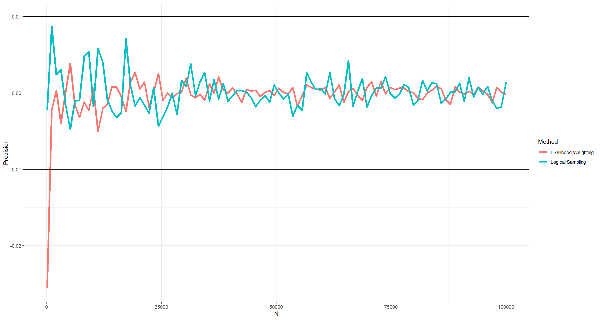
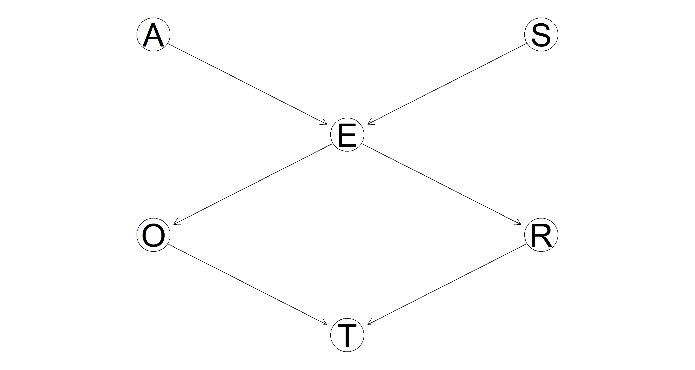
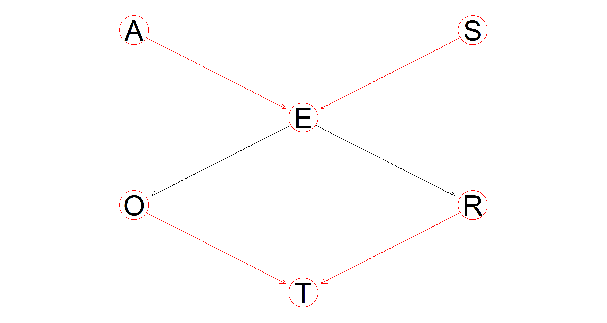
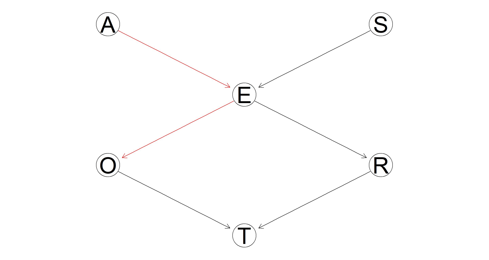
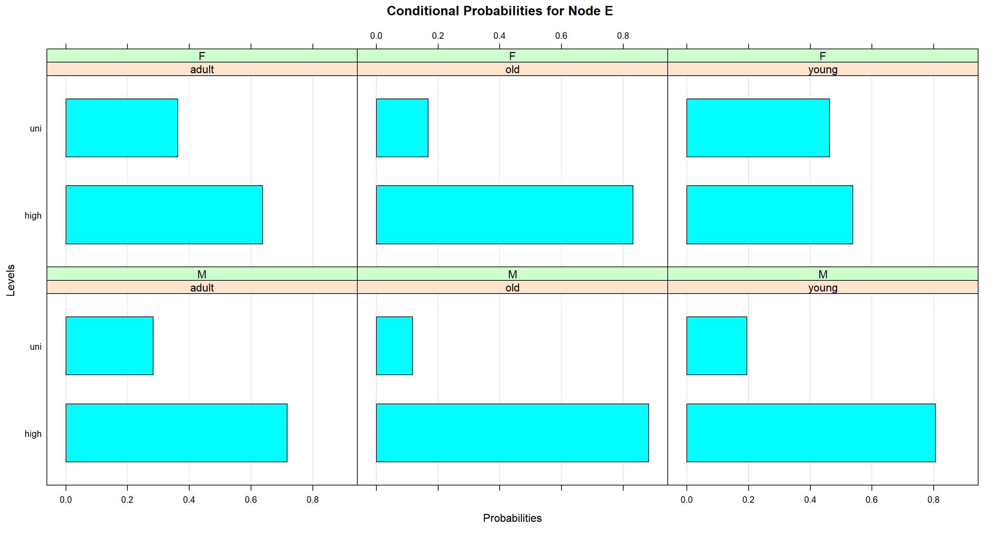
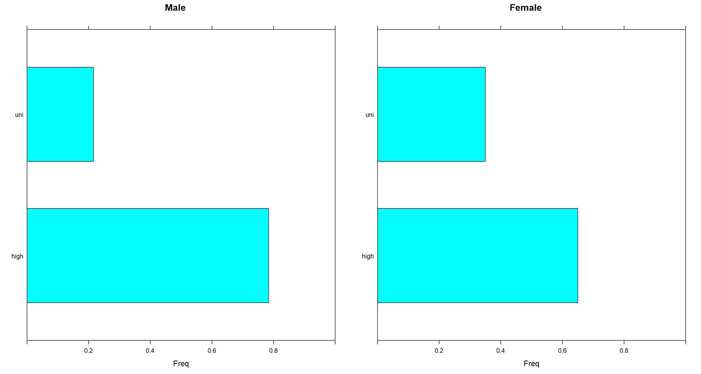

Multinomial Bayesian Networks
Material
Exercises
These are answers and solutions to the exercises at the end of Part 1 in Bayesian Networks with Examples in R by M. Scutari and J.-B. Denis. I have created these notes as a part of a study-partnership with Frederik Kallesøe. Much of my inspiration for these solutions, where necessary, has been obtained either from chatting with Frederik or by consulting the solutions provided by the authors themselves as in the appendix.
R Environment
For today’s exercise, I load the following packages:
library(bnlearn)
library(gRain)
library(ggplot2)
library(lattice)
library(gridExtra)
Scutari 1.1
Consider the DAG for the survey studied in this chapter and shown in Figure 1.1.
Here’s the DAG in question:

Part 1.
List the parents and the children of each node.
| Node | Parent(s) | Child(ren) |
|---|---|---|
| Age (A) | { } | E |
| Sex (S) | { } | E |
| Education (E) | A, S | O, R |
| Occupation (O) | E | E |
| Residence (R) | E | E |
| Travel (T) | O, R | { } |
Part 2.
List all the fundamental connections present in the DAG, and classify them as either serial, divergent or convergent.
Fundamental connections are those paths who contain three vertices/nodes. In directed graphs, they can be classified into three different categories depending on flow of dependencies.
| Path | Classification |
|---|---|
| A → E ← S | Convergent |
| A → E → O | Serial |
| A → E → R | Serial |
| S → E → O | Serial |
| S → E → R | Serial |
| O ← E → R | Divergent |
| E → O → T | Serial |
| E → R → T | Serial |
| O → T ← R | Convergent |
Part 3.
Add an arc from Age to Occupation, and another arc from Travel to Education. Is the resulting graph still a valid BN? If not, why?
Let’s take this one arc at a time:
- A → O. Adding this arc does not lead to the introduction of any cycles and so the Bayesian Network (BN) remains valid. I have added this graph to the figure from the book and highlighted it in green just below.
- T → E. Adding this arc does introduce cyclic paths along T → E → R → T and T → E → O → T thus resulting in a non-valid BN. I have highlighted the added arc in red and shaded the cyclic paths in orange below.

Scutari 1.2
Consider the probability distribution from the survey in Section 1.3.
The data can be obtained from here:
survey <- read.table("survey.txt", header = TRUE, colClasses = "factor")
A.lv <- c("young", "adult", "old")
S.lv <- c("M", "F")
E.lv <- c("high", "uni")
O.lv <- c("emp", "self")
R.lv <- c("small", "big")
T.lv <- c("car", "train", "other")
Part 1.
Compute the number of configurations of the parents of each node.
A and S have no parents (refer back to the DAG in exercise 1.1). Therefore, we are only interested in the configurations of parental nodes for E, O, R, and T:
(E <- length(A.lv) * length(S.lv))
## [1] 6
(O <- length(E.lv))
## [1] 2
(R <- length(E.lv))
## [1] 2
(T <- length(O.lv) * length(R.lv))
## [1] 4
This is a simple exercise of combinatorics. The number of parental configurations is simply the number of states each parental node can be in multiplied by the same for all other parental nodes.
Part 2.
Compute the number of parameters of the local distributions.
All of this comes down to how many parameters we need to estimate to accurately represent the probability distributions belonging to each node in our DAG. Since all probabilities per node sum up to 1, we effectively only ever need to estimate a number $n-1$ parameters for each node with $n$ being the number of states said node can be in. Let’s walk through this.
A has 3 states, so need to estimate 2 parameters ($p_A = 2$). S has 2 states hence we need 1 parameter for this node ($p_S = 1$).
Now we arrive at E and things get more complicated. The probability distribution for E comes in two parts - one for "high" and one for "low" education level. Both of these contain additional probability distributions of combinations of the levels of S and A. To obtain the number of parameters needed to describe this 3-dimensional distribution, we can simply calculate $p_E = n_S * n_A * (n_E-1) = 2 * 3 * 1 = 6$.
Moving on to O and R. Both of these need 2 parameters ($p_O = p_r = 2$) because of their two-dimensional distributions being made up of two levels of education and two levels occupation and residency respectively ($2 * (2-1) = 2$).
Lastly, we arrive at T which we need 8 parameters for ($p_T = 8$). Holy smokes. Why? Basically, this is a repeat of what we did for E. We have a three-dimensional distribution with three levels in T-Space, two levels in-space, and two more levels in O-Space. To arrive at the number of parameters we simply do $p_T = (n_T-1) * n_o * n_R = 2 * 2 * 2 = 8$.
Part 3.
Compute the number of parameters of the global distribution.
We can sum all of the local parameters up to arrive at $p_{total} = p_A + p_S + p_E + p_O + p_R + p_T = 2+1+6+2+2+8 = 21$.
And in R:
# define DAG structure
dag <- model2network("[A][S][E|A:S][O|E][R|E][T|O:R]")
# define local distributions
A.prob <- array(c(0.30, 0.50, 0.20), dim = 3, dimnames = list(A = A.lv))
S.prob <- array(c(0.60, 0.40), dim = 2, dimnames = list(S = S.lv))
E.prob <- array(
c(
0.75, 0.25, 0.72, 0.28, 0.88, 0.12, 0.64, 0.36, 0.70,
0.30, 0.90, 0.10
),
dim = c(2, 3, 2),
dimnames = list(E = E.lv, A = A.lv, S = S.lv)
)
O.prob <- array(c(0.96, 0.04, 0.92, 0.08),
dim = c(2, 2),
dimnames = list(O = O.lv, E = E.lv)
)
R.prob <- array(c(0.25, 0.75, 0.20, 0.80),
dim = c(2, 2),
dimnames = list(R = R.lv, E = E.lv)
)
T.prob <- array(
c(
0.48, 0.42, 0.10, 0.56, 0.36, 0.08, 0.58, 0.24, 0.18,
0.70, 0.21, 0.09
),
dim = c(3, 2, 2),
dimnames = list(T = T.lv, O = O.lv, R = R.lv)
)
# define set of local distributions
cpt <- list(
A = A.prob, S = S.prob, E = E.prob, O = O.prob,
R = R.prob, T = T.prob
)
# create BN
bn <- custom.fit(dag, cpt)
# obtain parameters
nparams(bn)
## [1] 21
Note that I pulled the probabilities for the distributions from the book and their values are irrelevant to the number of parameters.
Part 4.
Add an arc from Education to Travel. Recompute the factorisation into local distributions shown in Equation (1.1). How does the number of parameters of each local distribution change?
Adding E → T to Equation (1.1) results in: $$P(A, S, E, O, R, T) = P(A) P(S) P(E | A, S) P(O | E) P(R | E) P(T | E, O, R)$$
Now that T is dependant on E as well as the previous parents, the number of free parameters of the local distribution of T increases
to 16 ($p_E = 16$). This is because our local distribution of T is now four-dimensional resulting in $p_T = (n_T-1) * n_o * n_R * n_E = 2 * 2 * 2 * 2 = 16$.
All other local distributions remain the same.
Scutari 1.3
Consider again the DAG for the survey.
Part 1.
Create an object of class
bnfor the DAG.
Here’s the simplest way of doing this by specifying the model string:
# define DAG structure
bn <- model2network("[A][S][E|A:S][O|E][R|E][T|O:R]")
Part 2.
Use the functions in
bnlearnand the R object created in the previous point to extract the nodes and the arcs of the DAG. Also extract the parents and the children of each node.
Here we go:
nodes(bn)
## [1] "A" "E" "O" "R" "S" "T"
arcs(bn)
## from to
## [1,] "A" "E"
## [2,] "S" "E"
## [3,] "E" "O"
## [4,] "E" "R"
## [5,] "O" "T"
## [6,] "R" "T"
sapply(X = nodes(bn), FUN = bnlearn::parents, x = bn)
## $A
## character(0)
##
## $E
## [1] "A" "S"
##
## $O
## [1] "E"
##
## $R
## [1] "E"
##
## $S
## character(0)
##
## $T
## [1] "O" "R"
sapply(X = nodes(bn), FUN = bnlearn::children, x = bn)
## $A
## [1] "E"
##
## $E
## [1] "O" "R"
##
## $O
## [1] "T"
##
## $R
## [1] "T"
##
## $S
## [1] "E"
##
## $T
## character(0)
Part 3.
Print the model formula from
bn.
modelstring(bn)
## [1] "[A][S][E|A:S][O|E][R|E][T|O:R]"
Part 4.
Fit the parameters of the network from the data stored in survey.txt using their Bayesian estimators and save the result into an object of class
bn.fit.
bn_full <- bn.fit(bn, data = survey, method = "bayes", iss = 10)
class(bn_full)
## [1] "bn.fit" "bn.fit.dnet"
Part 5.
Remove the arc from Education to Occupation.
bn_sparse <- drop.arc(bn, from = "E", to = "O")
Part 6.
Fit the parameters of the modified network. Which local distributions change, and how?
bn_sparse <- bn.fit(bn_sparse, data = survey, method = "bayes", iss = 10)
We already now that the only local distribution which should change is that of O. Let’s check that:
dim(coef(bn_full$O))
## [1] 2 2
dim(coef(bn_sparse$O))
## [1] 2
Quite evidently, the local distribution of O has become much simpler in our sparse Bayesian Network. Why? Because it has no parent node now which would parse additional information and complexity onto it.
Scutari 1.4
Re-create the
bn.mleobject used in Section 1.4.
bn.mle <- bn.fit(dag, data = survey, method = "mle")
Part 1.
Compare the distribution of Occupation conditional on Age with the corresponding marginal distribution using
querygrain.
## creating object ready for gRain functions
junction <- compile(as.grain(bn.mle))
## Overall query
query_over <- querygrain(junction, nodes = "O")$O
## Marginal query when A is young
jage <- setEvidence(junction, "A", states = "young")
query_young <- querygrain(jage, nodes = "O")$O
## Marginal query when A is adult
jage <- setEvidence(junction, "A", states = "adult")
query_adult <- querygrain(jage, nodes = "O")$O
## Marginal query when A is old
jage <- setEvidence(junction, "A", states = "old")
query_old <- querygrain(jage, nodes = "O")$O
## Combining queries
queries_df <- rbind(query_over, query_young, query_adult, query_old)
rownames(queries_df) <- c("Overall", "Young", "Adult", "Old")
queries_df
## emp self
## Overall 0.9660248 0.03397517
## Young 0.9644166 0.03558340
## Adult 0.9636485 0.03635151
## Old 0.9738915 0.02610849
As we can see, conditioning on A does not influence the distribution of O that much.
Part 2.
How many random observations are needed for
cpqueryto produce estimates of the parameters of these two distributions with a precision of ±0.01?
I find this question to be difficult to understand. What I assume I am tasked with is to compare the distribution of Occupation conditional on Age (query_over: 0.97, 0.03) with the estimates produced by cpquery given some evidence (i.e. parental node configuration). This would mean comparing each query EXCEPT for query_over to it’s counterpart with cpquery(). That’s a tad excessive, and so I only compare query_young (0.96, 0.04) from above with the results obtained by cpquery(). What I am looking at is: “How high do my sample sizes have to be in cpquery() to be within a ±0.01 margin of query_young.
Luckily, query_young only has two values and so I can tell cpquery() to only compute one of them as the other follows logically by subtracting the former from 1.
Here, I want to test this for likelihood weighting (lw) and logic sampling (ls):
# create test list and test sequence
precis_ls <- as.list(c(0, 0))
names(precis_ls) <- c("LW", "LS")
n_seq <- as.integer(seq(from = 1e2, to = 1e5, length.out = 1e2))
# iterate over our sample sizes
for (i in n_seq) {
precis_ls$LW <- c(
precis_ls$LW,
cpquery(bn.mle, event = (O == "emp"), evidence = list(A = "young"), method = "lw", n = i)
)
precis_ls$LS <- c(
precis_ls$LS,
cpquery(bn.mle, event = (O == "emp"), evidence = (A == "young"), method = "ls", n = i)
)
}
# remove first positions which were blanks
precis_ls$LW <- precis_ls$LW[-1]
precis_ls$LS <- precis_ls$LS[-1]
# plotting the results
plot_df <- data.frame(
N = c(n_seq, n_seq),
Precision = c(
query_young[1] - precis_ls$LW,
query_young[1] - precis_ls$LS
),
Method = rep(c("Likelihood Weighting", "Logical Sampling"), each = length(n_seq))
)
ggplot(data = plot_df, aes(x = N, y = Precision, col = Method)) +
geom_line(size = 1.5) +
geom_hline(yintercept = 0.01) +
geom_hline(yintercept = -0.01) +
theme_bw()

As is evident from this plot, we do not need much in terms of sample to arrive at highly precise results using cpquery() with either method. Still, to be safe, I would probably always run with n = 1e3 at least.
Part 3.
Use the functions in
bnlearnto extract the DAG frombn.mle.
dag <- bn.net(bn.mle)
dag
##
## Random/Generated Bayesian network
##
## model:
## [A][S][E|A:S][O|E][R|E][T|O:R]
## nodes: 6
## arcs: 6
## undirected arcs: 0
## directed arcs: 6
## average markov blanket size: 2.67
## average neighbourhood size: 2.00
## average branching factor: 1.00
##
## generation algorithm: Empty
Part 4.
Which nodes d-separate Age and Occupation?
sapply(nodes(dag), function(z) dsep(dag, "A", "O", z))
## A E O R S T
## TRUE TRUE TRUE FALSE FALSE FALSE
Scutari 1.5
Implement an R function for BN inference via rejection sampling using the description provided in Section 1.4 as a reference.
From the book:
“In rejection sampling, we generate random independent observations from the BN. Then we count how many match the evidence we are conditioning on and how many of those observations also match the event whose probability we are computing; the estimated conditional probability is the ratio between the latter and the former.”
rejection.sampling <- function(bn, nsim, event.node, event.value, evidence.node, evidence.value) {
sims <- rbn(x = bn, n = nsim) # random samples for each node from a Bayesian network
m1 <- sims[sims[, evidence.node] == evidence.value, ] # retain only those samples where our evidence node matches the evidence condition
m2 <- m1[m1[, event.node] == event.value, ] # retain only those samples where our event node matches the event condition
return(nrow(m2) / nrow(m1)) # how many percent of the evidence samples also return the event state?
}
rejection.sampling(
bn = bn.mle, nsim = 10^4,
event.node = "O", event.value = "emp",
evidence.node = "A", evidence.value = "young"
)
## [1] 0.9640978
Scutari 1.6
Using the
dagandbnobjects from Sections 1.2 and 1.3:
The DAG in question is the same as dag in these solutions. The BN is the same as bn.mle or bn_full. Since I do this for the Bayesian part of Bayesian networks, I use the latter.
Part 1.
Plot the DAG using
graphviz.plot.
Easy enough:
graphviz.plot(dag)

Part 2.
Plot the DAG again, highlighting the nodes and the arcs that are part of one or more v-structures.
A bit meaningless of a plot because all of these nodes are involved in v-structures. However, the paths E → O, and E → R are not highlighted as v-structures. Why? Because they are sequential paths rather than convergent or divergent.
vs <- vstructs(dag, arcs = TRUE)
hl <- list(nodes = unique(as.character(vs)), arcs = vs)
graphviz.plot(dag, highlight = hl)

Part 3.
Plot the DAG one more time, highlighting the path leading from Age to Occupation.
All we need to do is highlight the paths A → E and E → O:
hl <- matrix(c("A", "E", "E", "O"), nc = 2, byrow = TRUE)
graphviz.plot(bn.mle, highlight = list(arcs = hl))

Part 4.
Plot the conditional probability table of Education.
There is a ready-made function for that!
bn.fit.barchart(bn_full$E)
 Across all age ranges, women are much higher educated (on average) than men.
Part 5.
Compare graphically the distributions of Education for male and female interviewees.
Here, we simply need to extract the relevant proportions and need them into a barchart.
junction <- compile(as.grain(bn.mle))
jmale <- setEvidence(junction, "S", states = "M")
jfemale <- setEvidence(junction, "S", states = "F")
p1 <- barchart(querygrain(jmale, nodes = "E")$E, main = "Male", xlim = c(0, 1))
p2 <- barchart(querygrain(jfemale, nodes = "E")$E, main = "Female", xlim = c(0, 1))
grid.arrange(p1, p2, ncol = 2)

Session Info
sessionInfo()
## R version 4.2.1 (2022-06-23 ucrt)
## Platform: x86_64-w64-mingw32/x64 (64-bit)
## Running under: Windows 10 x64 (build 19044)
##
## Matrix products: default
##
## locale:
## [1] LC_COLLATE=English_Germany.utf8 LC_CTYPE=English_Germany.utf8 LC_MONETARY=English_Germany.utf8 LC_NUMERIC=C LC_TIME=English_Germany.utf8
##
## attached base packages:
## [1] stats graphics grDevices utils datasets methods base
##
## other attached packages:
## [1] gridExtra_2.3 lattice_0.20-45 ggplot2_3.3.6 gRain_1.3.11 gRbase_1.8.7 bnlearn_4.8.1
##
## loaded via a namespace (and not attached):
## [1] Rcpp_1.0.9 assertthat_0.2.1 digest_0.6.29 utf8_1.2.2 R6_2.5.1 stats4_4.2.1 evaluate_0.16 highr_0.9 blogdown_1.13
## [10] pillar_1.8.1 rlang_1.0.5 rstudioapi_0.14 Rgraphviz_2.40.0 jquerylib_0.1.4 R.utils_2.12.0 R.oo_1.25.0 Matrix_1.5-1 rmarkdown_2.16
## [19] styler_1.8.0 labeling_0.4.2 stringr_1.4.1 igraph_1.3.4 munsell_0.5.0 compiler_4.2.1 xfun_0.33 pkgconfig_2.0.3 BiocGenerics_0.42.0
## [28] htmltools_0.5.3 tidyselect_1.1.2 tibble_3.1.8 bookdown_0.29 fansi_1.0.3 dplyr_1.0.9 withr_2.5.0 R.methodsS3_1.8.2 grid_4.2.1
## [37] RBGL_1.72.0 jsonlite_1.8.0 gtable_0.3.1 lifecycle_1.0.2 DBI_1.1.3 magrittr_2.0.3 scales_1.2.1 graph_1.74.0 cli_3.3.0
## [46] stringi_1.7.8 cachem_1.0.6 farver_2.1.1 bslib_0.4.0 vctrs_0.4.1 generics_0.1.3 tools_4.2.1 R.cache_0.16.0 glue_1.6.2
## [55] purrr_0.3.4 parallel_4.2.1 fastmap_1.1.0 yaml_2.3.5 colorspace_2.0-3 BiocManager_1.30.18 knitr_1.40 sass_0.4.2